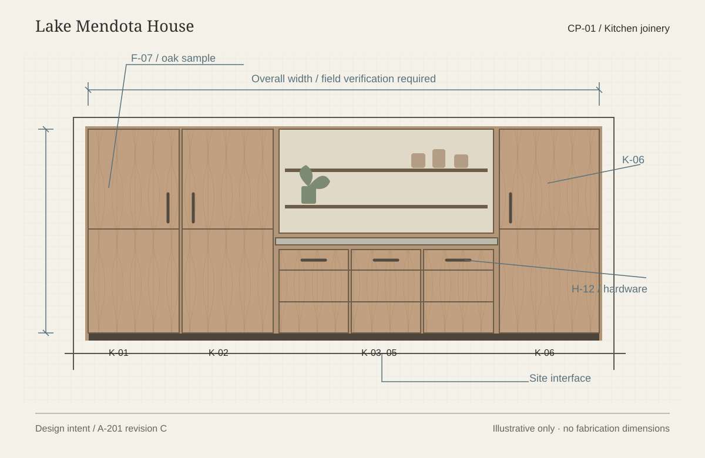

Package contents
| Record | Edition | Meaning in this package | Owner / supply responsibility |
|---|
Round seven
Configure. Design. Build.
Obtain client acceptance.

A new fictional cabinetry study. Not a fabrication document.
Your direction makes this the native starting point. The cabinet package is the test: can the designer, maker, suppliers and site team work from the same understood scope?
Configure the arrangement. Services and responsibilities can differ by job or package.
Bring the team into the work. Quotes, samples, questions and site returns stay attached.
Require client acceptance. Studio completion cannot substitute for the client’s sign-off.
Presentation and local mockups only. Earlier rounds and product code are unchanged.
A starting arrangement supplies sensible defaults. Then name what the studio delivers and who carries the work. The preview changes the paper’s emphasis, expected artifacts and next acts.
The change becomes a proposed scope edition with a before/after reading: affected services, owner, fee and timing. Issued packages, orders and prior acceptances retain their original scope. New work needs its own agreement and acceptance; changing a starting arrangement never rewrites it.
Working with a building team does not automatically make the studio a design-build contractor. These examples propose service arrangements, not contract classes.
One room, one package, several distinct contributions. The designer carries the intent. The craftsman contributes fabrication knowledge. Vendors and site trades resolve the interfaces. The client makes the decisions assigned to them.
The room still has design and client acceptance. A cabinetry commission would be a proposed additional scope. The study below remains available as a separate reference using the fixed cabinet-only arrangement: GC contracts and instructs; Northline verifies and installs. It does not become part of this job.
Oak storage, a recessed work surface and hardware that belongs to the whole room. The package must preserve those choices through technical development.
Presentation controls: inspect five independent fictional moments on this paper, not a live progression or proposed portal navigation. Selecting one never sends a file, approves work or instructs a craftsman.
| Record | Edition | Meaning in this package | Owner / supply responsibility |
|---|
The designer issues intent, specifications and the agreed interfaces. The maker returns a proposed fabrication set. Review records say who reviewed which edition, and for what purpose.
The maker reviews the supplied details for buildability and site fit within their agreed role. Questions and deviations return to the designer before the relevant go-ahead. A second set is not presumed mandatory.
A saved vendor, a trade account and an appointed package participant are different relationships. Each person needs the relevant scope, edition and question, plus a clear way to bring evidence back.
Presentation comparison controls. These exchanges are proposed work-copy examples, not connected accounts. If coordination is excluded, site-team examples remain a separate reference.
Full-service reference sequence. Excluded studio coordination stays with the appointed building team; design questions may still return to the studio.
Foundry proposes H-14 in place of H-12. The maker checks the effect on drilling and manufacture; the designer checks the design; the client decides on the changed selection where required. Price, timing and the affected issue remain visible.
The current design can advance while the released set stays fixed. Only the affected work is assessed for a hold.
Your requirement for this proposal is clear: the designer cannot complete their service without client sign-off and acceptance of the agreed scope. Cabinet approval, fabrication permission and final acceptance each say exactly what was decided.
The selected design / finish edition.
The named authorizer’s instruction for an exact package.
The maker’s contracted work and exceptions; informs the studio without transferring that contract.
The whole included designer-service scope.
Prewritten fictional evidence states. You are not signing for either client. The default example requires both Nora and Eli.
Delivery is not acceptance. An issued packet, an opened link or a studio walkthrough does not count as client sign-off.
Exceptions stay owned. This example keeps service completion unavailable while a studio-owned correction is open, even if the client has accepted the service with that exception.
Scope changes need new acceptance. Earlier sign-off remains attached to its edition and cannot cover newly added work.
Proposed whole-service acceptance requirement. Current trade-scope source already distinguishes client acceptance from studio substantial completion; the inspected project closeout path does not establish this same client-evidence gate.
The proposal gathers existing operational depth around a package. It does not claim that a unified cabinet build package, configuration model or client-gated job closeout is already implemented.
| Foundation observed in source | Round-seven proposal |
|---|---|
| Phase templates, deliverables and default gates; agreement composition. | One setup fold for service scope and responsibilities. Working alongside a GC does not select a design-build contract. |
| Vendor relationships, custom commission revisions, quote requests, bids and submittals. | One cabinetry package linking design, maker, suppliers, samples and commercial scope. |
| Exact drawing issues, recipients, purposes; trade work copy and engagement. | Readiness evidence and a separately authorized fabrication instruction. “Production” issue purpose alone is not enough. |
| Studio substantial completion versus evidenced client trade acceptance. | Required client acceptance of the whole designer-service scope before completion. |
Source inspection at ee9c450a5; not a live audit. Read file-level evidence and boundaries.
Ferris describes detailed shop drawings, site-dimension checking, finish/hardware decisions and installation, alongside project updates.
Ferris Custom Cabinetry — processCutting Edge describes field measurements with the builder, design drawings, sample references and the transition into engineering and production.
Cutting Edge Woodworking — processSagar distinguishes design intent, manufacturing information and site coordination. Our two development routes are proposals based on the project’s agreed responsibilities.
Sagar Cabinets — designer / joiner collaborationFull service with a building team is the priority. Stronger vendor/trade participation and required client acceptance guide this round.
Round-six review inputPublic sources accessed 23 October 2026. External links open a new tab. Firms were not interviewed and do not endorse this proposal.
Three separately prompted agents examined cabinetry workflow, job configuration and current source. Claude Code supplied a separate-context critique. These are simulated design perspectives and source analysis, not practitioner interviews.
Validate with a designer and craftsman using a completed cabinetry job: what actually belongs in their package, which review is theirs, how an issue becomes a go-ahead, and what client acceptance means with remaining work. Also test a maker who works directly from designer details.
All people, documents, times, commercial terms and drawings in the mockup are fictional. Configuration and scene controls change local presentation state only. No real documents are sent, no permissions or agreements change, and no payment or signature is performed.
Review the configuration and the cabinetry handoff as one experience. Notes remain in this browser and can be downloaded; nothing is sent.